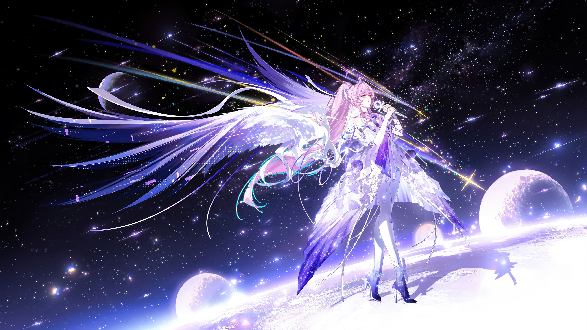
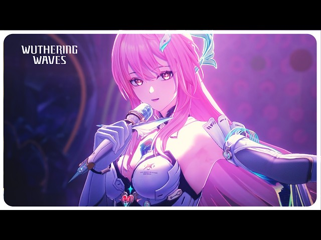
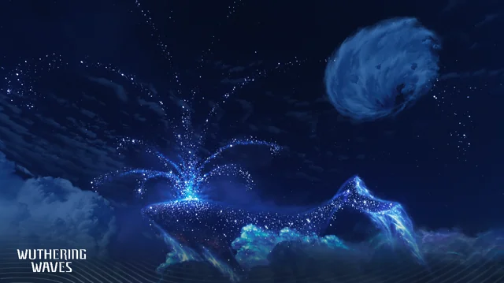
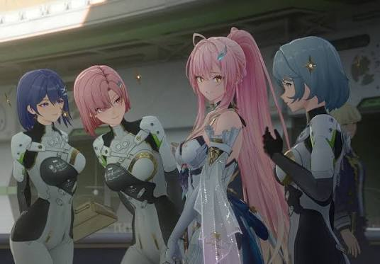
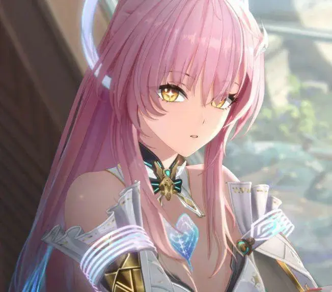
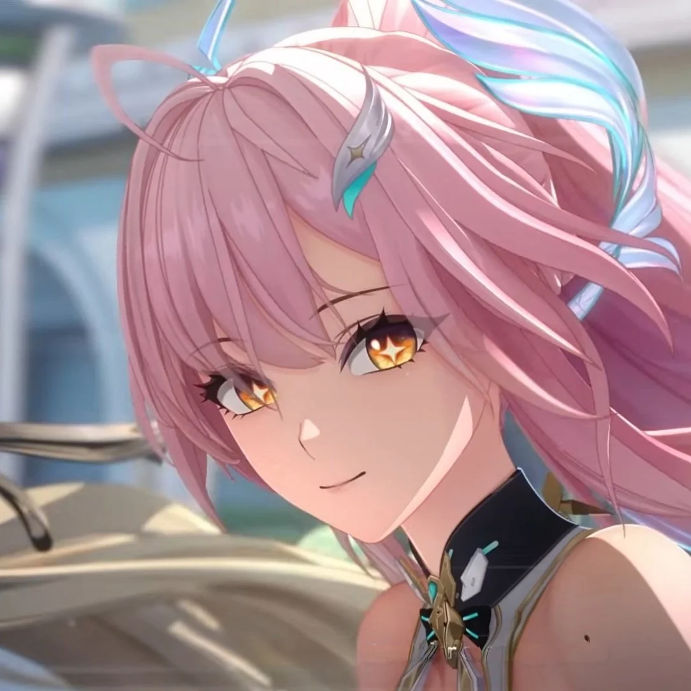
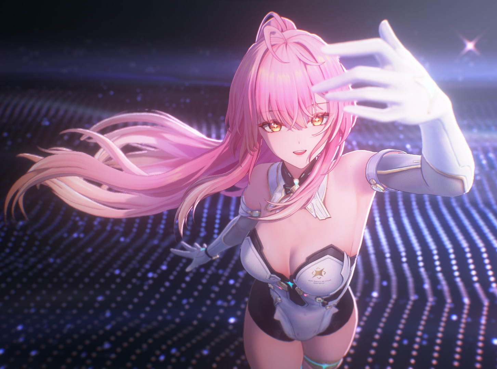

About:
Aemeath is a tall woman with fair skin and golden, star-pupiled eyes, and a pink high ponytail that fades to lemon yellow at the tips. She has a bubbly, warm personality with a wide range of interests, and she loves campus life and sharing her joy with others. Once a Synchronist at Startorch Academy (from the Roya Tribe in the Frostlands), she overclocked to resonate with the Exostrider and lost her body in the process, becoming a digital ghost who now drifts through the world unseen by everyone except Rover, whom she'd met back in childhood. Despite that lonely existence, she keeps a playful spark — she even runs an online idol persona called "Fleet Snowfluff."

Likes:
-
Singing

She likes to sing
-
Stargazing

She likes to stargaze
-
Company

she likes company
Dislikes:
-
Anything that harms the world

Aeameath hates everything that could harm the world
-
Beeing tied down

She dosent like being tied down or living small
-
Sticking with one thing for too long

She likes variaty